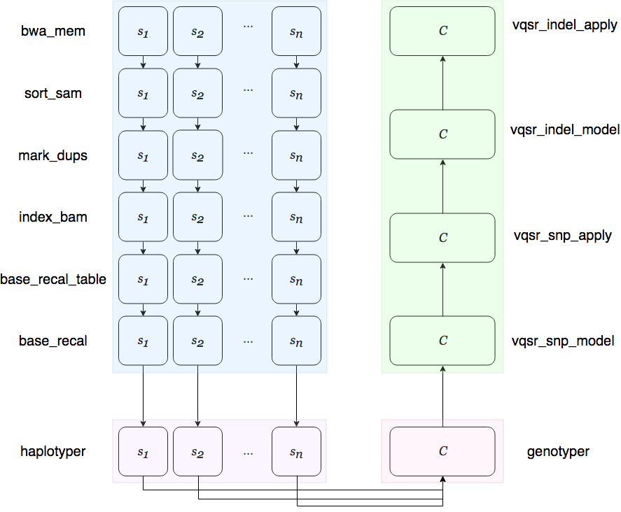
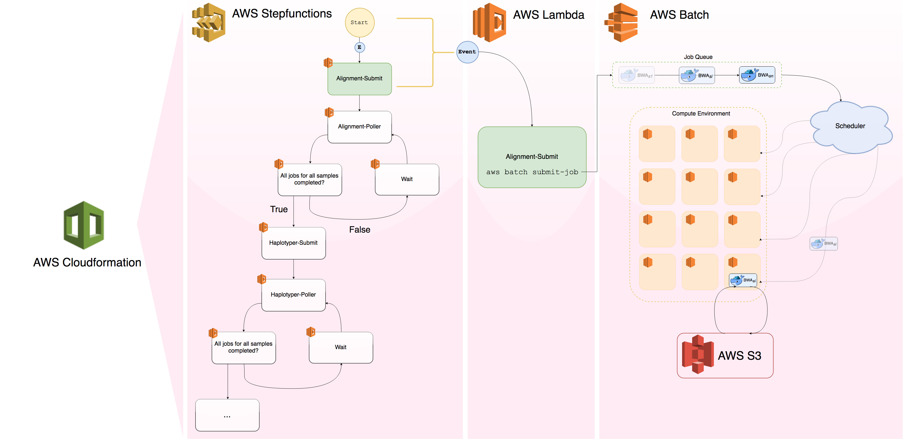

Pipeline Overview¶
Genomics Workflow¶
The PsychCore NGS pipeline is a serverless, automated, easy to use genomics pipeline for calling variants on large cohorts of human sequencing samples. The workflow of the pipeline is as follows:
The pipeline takes gzipped paired end sequencing fastq files (R1|R2.fastq.gz) for each sample and aligns them to a specified reference build, using BWA MEM. Several BAM processing steps (Picard and GATK) follow to produced a final processed BAM which is haplotyped using Sentieon’s* Haplotyper module. These steps are done in parallel for each sample in the cohort. After Haplotyper is run, joint genotyping is performed accross the entire cohort with Sentieon’s Genotyper, producing a VCF which undergoes VQSR (GATK) which outputs the final VCF.
Pipeline Infrastructure¶
Stepfunctions, Batch, Lambda, Docker oh my!
Several AWS services are invovled in the infrastructure of the pipeline - AWS Cloudformation, StepFunctions, Lambda, Batch, EC2, S3, and CloudWatch. The pipeline also makes use of Docker containers, as well as Google Cloud Platform’s (GCP) Google Cloud Storage (GCS), and Dataproc.
The pipeline’s main bioinformatics tools are BWA MEM, Picard, GATK, and Sentieon. Each of these tools has been (Docker) containerised, and are deployed using AWS Batch. AWS Lambda and AWS Stepfunctions manage the submission of jobs to the Batch cluster as well as the handling of user input. The entire system architecture of the pipeline is managed by AWS Cloudformation while logging during the run of the pipeline is handled by AWS Cloudwatch.
(Link to publication)
A Note about Sentieon¶
Sentieon developes and supplies a suite of bioinfromatics analyis tools for processing genomics data. In 2016, Sentieon won the PrecisionFDA Truth and Consistency challenges. Sentieon also won first place in ICGC TCGA Dream Mutation Calling Challenge. For more information see Sentieon’s homepage here.